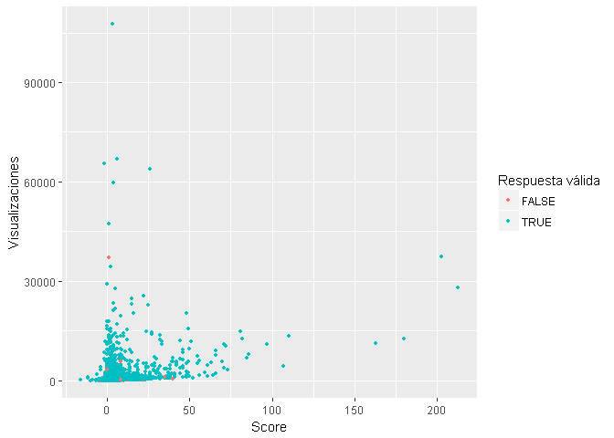

Introduccion y Motivacion
El desarrollo integral del estudiante de matemática se basa en la investigación y recopilación de información adicional a la estudiada en clases, llegar a profundizar un tema puede ser muy sencillo hoy en día con el acceso a internet, pero a medida que el estudiante avanza en su carrera empieza a dificultarse la búsqueda y recopilación de información dado a la complejidad de las asignaturas, en algunos casos surgen problemas de mayor dificultad que obligan a buscar ayuda profesional y en este caso salen a relucir sites o foros donde personas del área comparten dudas y conocimiento, en particular está el caso de math.stackexchange.com, en el cual tanto profesores y alumnos participan en dicho intercambio de información. Este website resulta una herramienta útil para todo tipo de personas, además, es publica, gratuita y de fácil manejo, en él se hacen en promedio dos preguntas por minuto, y el tiempo promedio en obtener una respuesta es de 10 min, lo cual lo convierte en una fuente confiable para obtener respuestas a dudas emergentes, al menos para quien busca tener una idea de hacia dónde va dirigido el problema. Con mas de 1.372.2971 preguntas y mas de 7.015.119 usuarios, math.stackexchange.com se ha convertido en una herramienta útil no solo para estudiantes de matemáticas puras si no para cualquier estudiante cuya carrera este ligada con esta ciencia.
El equipo esta interesado en determinar a traves de modelos de clasificacion y mineria de texto, si una pregunta hecha en el sitio tiene probabilidades de ser cerrada luego de una revision, ya sea por estar mal redact5ada, ser un duplicado de otra pregunta, etc. Además se quiere predecir el Score de una pregunta, la idea es identificar preguntas con baja calidad y hacer seguimiento de las mismas.
Los Datos
El proceso de obtencion de los datos se realizo mediante el uso de la API de stackexchange.com y la biblioteca stackr desarrollada por David Robinson, todo el codigo y documentacion asociada se encuentra en el siguiente enlace StackMath. Inicialmente hacemos un llamado a la API para obtener la informacion general del sitio a traves de la funcion stack_info():
| new_active_users | total_users | badges_per_minute | total_badges | total_votes | total_comments | answers_per_minute | questions_per_minute | total_answers | total_accepted | total_unanswered | total_questions | api_revision |
|---|---|---|---|---|---|---|---|---|---|---|---|---|
| 13 | 7018726 | 4.88 | 22382243 | 99426156 | 67742828 | 4.72 | 2.99 | 21638022 | 7417895 | 3892004 | 13728707 | 2017.4.21.25514 |
Toda la manipulacion y limpieza de los datos se hizo usando las bibliotecas dplyr,tm,stringr. Se transformo el cuerpo de texto de cada pregunta en texto tratable: se eliminaron los signos de puntuacion, se removieron los numeros y palabras que no aportan informacion al modelo (stopwords). el resultado del preprocesamiento es una matris Termino-Documento, la funcion peso que consideramos fue TF-IDF Weight:
| score | can | find | image | phow | sure | use | blockquote |
|---|---|---|---|---|---|---|---|
| 0 | 0.0657697 | 0.1074383 | 0.1896077 | 0.1703007 | 0.1617314 | 0.1375815 | 0.0000000 |
| 1 | 0.0100482 | 0.0000000 | 0.0579357 | 0.0000000 | 0.0000000 | 0.0210194 | 0.0332031 |
| 1 | 0.0000000 | 0.0000000 | 0.0000000 | 0.0000000 | 0.0000000 | 0.0593489 | 0.0000000 |
| 0 | 0.0000000 | 0.0000000 | 0.0000000 | 0.0000000 | 0.0000000 | 0.0000000 | 0.0000000 |
| 1 | 0.0000000 | 0.0000000 | 0.0000000 | 0.1338077 | 0.0000000 | 0.0000000 | 0.0000000 |
Análisis Exploratorio
Tags mas frecuentes y nube de palabras
## $x
## $x$word
## [1] "calculus" "real-analysis"
## [3] "linear-algebra" "probability"
## [5] "abstract-algebra" "integration"
## [7] "sequences-and-series" "general-topology"
## [9] "combinatorics" "matrices"
## [11] "complex-analysis" "algebra-precalculus"
## [13] "group-theory" "geometry"
## [15] "functional-analysis" "analysis"
## [17] "number-theory" "differential-equations"
## [19] "limits" "elementary-number-theory"
## [21] "probability-theory" "statistics"
## [23] "measure-theory" "functions"
## [25] "multivariable-calculus" "discrete-mathematics"
## [27] "trigonometry" "elementary-set-theory"
## [29] "derivatives" "differential-geometry"
## [31] "inequality" "algebraic-geometry"
## [33] "logic" "polynomials"
## [35] "proof-verification" "probability-distributions"
## [37] "graph-theory" "reference-request"
## [39] "ring-theory" "convergence"
## [41] "pde" "algebraic-topology"
## [43] "optimization" "definite-integrals"
## [45] "vector-spaces" "complex-numbers"
## [47] "commutative-algebra" "summation"
## [49] "soft-question" "metric-spaces"
## [51] "stochastic-processes" "continuity"
## [53] "numerical-methods" "finite-groups"
## [55] "algorithms" "proof-writing"
## [57] "field-theory" "prime-numbers"
## [59] "notation" "category-theory"
## [61] "eigenvalues-eigenvectors" "permutations"
## [63] "fourier-analysis" "modular-arithmetic"
## [65] "induction" "logarithms"
## [67] "vectors" "random-variables"
## [69] "modules" "recurrence-relations"
## [71] "set-theory" "asymptotics"
## [73] "representation-theory" "terminology"
## [75] "operator-theory" "power-series"
## [77] "manifolds" "convex-analysis"
## [79] "arithmetic" "galois-theory"
## [81] "taylor-expansion" "algebraic-number-theory"
## [83] "binomial-coefficients" "contest-math"
## [85] "improper-integrals" "exponential-function"
## [87] "hilbert-spaces" "differential-topology"
## [89] "definition" "divisibility"
## [91] "computer-science" "lie-groups"
## [93] "lebesgue-integral" "systems-of-equations"
## [95] "combinations" "euclidean-geometry"
## [97] "banach-spaces" "diophantine-equations"
## [99] "linear-transformations" "riemannian-geometry"
## [101] "normal-distribution" "lebesgue-measure"
## [103] "ideals" "determinant"
## [105] "analytic-geometry" "lie-algebras"
## [107] "norm" "dynamical-systems"
## [109] "roots" "fourier-series"
## [111] "partial-derivative" "expectation"
## [113] "physics" "circle"
## [115] "compactness" "special-functions"
## [117] "indefinite-integrals" "triangle"
## [119] "convex-optimization" "vector-analysis"
## [121] "self-learning" "recreational-mathematics"
## [123] "sobolev-spaces" "graphing-functions"
## [125] "finite-fields" "examples-counterexamples"
## [127] "markov-chains" "relations"
## [129] "exponentiation" "stochastic-calculus"
## [131] "propositional-calculus" "inverse"
## [133] "homological-algebra" "normed-spaces"
## [135] "homology-cohomology" "intuition"
## [137] "linear-programming" "proof-explanation"
## [139] "quadratics" "lp-spaces"
## [141] "approximation" "education"
## [143] "problem-solving" "extension-field"
## [145] "conic-sections" "laplace-transform"
## [147] "generating-functions" "inner-product-space"
## [149] "matlab" "factorial"
## [151] "order-theory" "mathematical-physics"
## [153] "tensor-products" "analytic-number-theory"
## [155] "puzzle" "contour-integration"
## [157] "transformation" "abelian-groups"
## [159] "homotopy-theory" "cardinals"
## [161] "brownian-motion" "closed-form"
## [163] "functional-equations" "computational-complexity"
## [165] "uniform-convergence" "math-history"
## [167] "real-numbers" "model-theory"
## [169] "factoring" "predicate-logic"
## [171] "3d" "coordinate-systems"
## [173] "game-theory" "radicals"
## [175] "matrix-equations" "smooth-manifolds"
## [177] "numerical-linear-algebra" "boolean-algebra"
## [179] "book-recommendation" "first-order-logic"
## [181] "congruences" "distribution-theory"
## [183] "statistical-inference" "equivalence-relations"
## [185] "polar-coordinates" "area"
## [187] "irreducible-polynomials" "differential-forms"
## [189] "volume" "rotations"
## [191] "surfaces" "finance"
## [193] "operator-algebras" "parametric"
## [195] "tensors" "connectedness"
## [197] "regression" "fractions"
## [199] "elliptic-curves" "infinity"
## [201] "algebraic-curves" "absolute-value"
## [203] "martingales" "alternative-proof"
## [205] "spectral-theory" "computability"
## [207] "calculus-of-variations" "gamma-function"
## [209] "complex-geometry" "convolution"
## [211] "harmonic-analysis" "nonlinear-optimization"
## [213] "solution-verification" "conditional-expectation"
## [215] "matrix-calculus" "residue-calculus"
## [217] "irrational-numbers" "sheaf-theory"
## [219] "recursion" "fibonacci-numbers"
## [221] "symmetric-groups" "vector-bundles"
## [223] "riemann-zeta" "axiom-of-choice"
## [225] "signal-processing" "projective-geometry"
## [227] "c-star-algebras" "big-list"
## [229] "complex-integration" "limits-without-lhopital"
## [231] "random" "automata"
## [233] "formal-languages" "interpolation"
## [235] "mathematical-modeling" "lagrange-multiplier"
## [237] "cryptography" "topological-groups"
## [239] "group-actions" "partitions"
## [241] "epsilon-delta" "markov-process"
## [243] "divergent-series" "curves"
## [245] "rational-numbers" "schemes"
## [247] "stochastic-integrals" "quadratic-forms"
## [249] "binomial-theorem" "supremum-and-infimum"
## [251] "random-walk" "harmonic-functions"
## [253] "machine-learning" "orthogonality"
## [255] "information-theory" "cauchy-sequences"
## [257] "diagonalization" "limsup-and-liminf"
## [259] "cyclic-groups" "coding-theory"
## [261] "riemann-surfaces" "trees"
## [263] "prime-factorization" "weak-convergence"
## [265] "uniform-continuity" "ordinals"
## [267] "products" "binary"
## [269] "matrix-decomposition" "conditional-probability"
## [271] "integers" "greatest-common-divisor"
## [273] "stochastic-analysis" "hyperbolic-geometry"
## [275] "classical-mechanics" "dice"
## [277] "uniform-distribution" "p-adic-number-theory"
## [279] "fourier-transform" "average"
## [281] "applications" "economics"
## [283] "estimation" "control-theory"
## [285] "computational-mathematics" "normal-subgroups"
## [287] "pi" "poisson-distribution"
## [289] "nonlinear-system" "fixed-point-theorems"
## [291] "recursive-algorithms" "axioms"
## [293] "laurent-series" "banach-algebras"
## [295] "bayesian" "matrix-rank"
## [297] "quantifiers" "standard-deviation"
## [299] "noncommutative-algebra" "math-software"
## [301] "plane-curves" "topological-vector-spaces"
## [303] "regular-language" "floor-function"
## [305] "lattice-orders" "independence"
## [307] "geometric-topology" "curvature"
## [309] "group-isomorphism" "covariance"
## [311] "computational-geometry" "quaternions"
## [313] "sylow-theory" "algebraic-groups"
## [315] "correlation" "covering-spaces"
## [317] "implicit-differentiation" "periodic-functions"
## [319] "partial-fractions" "analyticity"
## [321] "percentages" "infinite-product"
## [323] "multilinear-algebra" "dirac-delta"
## [325] "spherical-coordinates" "boundary-value-problem"
## [327] "least-squares" "philosophy"
## [329] "fundamental-groups" "bessel-functions"
## [331] "pigeonhole-principle" "riemann-sum"
## [333] "context-free-grammar" "projective-space"
## [335] "decimal-expansion" "fractals"
## [337] "continued-fractions" "riemann-integration"
## [339] "ergodic-theory" "fake-proofs"
## [341] "trace" "modular-forms"
## [343] "binomial-distribution" "foundations"
## [345] "quantum-mechanics" "function-composition"
## [347] "symmetry" "differential"
## [349] "conformal-geometry" "orthonormal"
## [351] "inclusion-exclusion" "entropy"
## [353] "heat-equation" "vector-fields"
## [355] "duality-theorems" "advice"
## [357] "semigroups" "number-systems"
## [359] "coloring" "means"
## [361] "hypergeometric-function" "totient-function"
## [363] "bayes-theorem" "group-homomorphism"
## [365] "sampling" "data-analysis"
## [367] "polygons" "stopping-times"
## [369] "hyperbolic-functions" "maple"
## [371] "affine-geometry" "quotient-spaces"
## [373] "integral-equations" "compact-operators"
## [375] "rational-functions" "hypothesis-testing"
## [377] "square-numbers" "characteristic-functions"
## [379] "integral-inequality" "svd"
## [381] "descriptive-set-theory" "jordan-normal-form"
## [383] "central-limit-theorem" "word-problem"
## [385] "polyhedra" "integer-programming"
## [387] "fiber-bundles" "bilinear-form"
## [389] "cross-product" "combinatorial-game-theory"
## [391] "symplectic-geometry" "conjectures"
## [393] "characters" "knot-theory"
## [395] "lipschitz-functions" "variance"
## [397] "surface-integrals" "exterior-algebra"
## [399] "approximation-theory" "numerical-optimization"
## [401] "cubic-equations" "filters"
## [403] "proof-theory" "wave-equation"
## [405] "spherical-geometry" "exact-sequence"
## [407] "learning" "visualization"
## [409] "fluid-dynamics" "roots-of-unity"
## [411] "integral-transforms" "turing-machines"
## [413] "probability-limit-theorem" "geometric-construction"
## [415] "ratio" "trigonometric-series"
## [417] "principal-ideal-domains" "spheres"
## [419] "substitution" "free-groups"
## [421] "order-statistics" "mathematica"
## [423] "prime-ideals" "moment-generating-functns"
## [425] "time-series" "transcendental-numbers"
## [427] "incompleteness" "orthogonal-polynomials"
## [429] "algebraic-graph-theory" "group-cohomology"
## [431] "chinese-remainder-theorem" "density-function"
## [433] "combinatorial-geometry" "bounded-variation"
## [435] "monte-carlo" "inverse-function"
## [437] "quadratic-residues" "dimension-theory"
## [439] "integral-domain" "integer-lattices"
## [441] "universal-algebra" "abelian-categories"
## [443] "online-resources" "monoid"
## [445] "von-neumann-algebras" "plane-geometry"
## [447] "minimal-polynomials" "symmetric-polynomials"
## [449] "regular-expressions" "noetherian"
## [451] "laplacian" "image-processing"
## [453] "geometric-measure-theory" "harmonic-numbers"
## [455] "peano-axioms" "maxima-minima"
## [457] "geodesic" "solid-geometry"
## [459] "card-games" "forcing"
## [461] "angle" "wolfram-alpha"
## [463] "pattern-recognition" "np-complete"
## [465] "queueing-theory" "binary-operations"
## [467] "adjoint" "estimation-theory"
## [469] "positive-definite" "finite-differences"
## [471] "zeta-functions" "geometric-group-theory"
## [473] "gre-exam" "projective-module"
## [475] "line-integrals" "poisson-process"
## [477] "eigenfunctions" "bezier-curve"
## [479] "law-of-large-numbers" "divisor-sum"
## [481] "localization" "random-graphs"
## [483] "implicit-function-theorem" "computer-algebra-systems"
## [485] "perturbation-theory" "several-complex-variables"
## [487] "parameter-estimation" "discrete-optimization"
## [489] "natural-deduction" "ramsey-theory"
## [491] "simplex" "splitting-field"
## [493] "simulation" "nested-radicals"
## [495] "isometry" "arithmetic-geometry"
## [497] "actuarial-science" "paradoxes"
## [499] "spline" "natural-numbers"
##
## $x$freq
## [1] 66586 63440 58099 46009 41866 33988 30391 26384 26357 25344 24746
## [12] 24141 24057 22598 22290 21094 20943 20491 19753 19353 17652 16675
## [23] 16495 16259 15508 15463 14609 14184 13810 13515 13025 13012 12209
## [34] 11870 11509 11368 11153 10976 10131 9833 9703 9509 8836 8788
## [45] 8563 8538 7685 7642 7055 7048 6759 6634 6627 6546 6447
## [56] 6229 6172 6124 6097 6039 5919 5803 5463 4986 4865 4695
## [67] 4578 4526 4426 4378 4356 4223 4189 4173 4160 3831 3802
## [78] 3731 3722 3538 3509 3500 3489 3478 3417 3385 3369 3249
## [89] 3230 3146 3140 3083 3070 3058 3023 2940 2913 2902 2901
## [100] 2882 2843 2843 2841 2840 2839 2801 2747 2724 2698 2697
## [111] 2693 2691 2674 2648 2646 2639 2587 2583 2582 2529 2502
## [122] 2498 2466 2432 2425 2411 2405 2384 2293 2225 2193 2176
## [133] 2173 2172 2153 2144 2125 2121 2112 2090 2056 2012 1981
## [144] 1972 1961 1958 1932 1900 1883 1839 1828 1827 1822 1798
## [155] 1783 1770 1756 1753 1733 1729 1718 1693 1691 1683 1675
## [166] 1643 1634 1628 1626 1607 1586 1581 1575 1564 1555 1550
## [177] 1522 1491 1481 1465 1463 1460 1434 1428 1413 1373 1369
## [188] 1358 1335 1320 1320 1318 1315 1306 1300 1300 1299 1283
## [199] 1282 1281 1280 1279 1274 1265 1265 1248 1243 1243 1243
## [210] 1233 1232 1176 1175 1157 1156 1153 1150 1146 1136 1135
## [221] 1111 1108 1090 1084 1081 1058 1049 1047 1047 1047 1044
## [232] 1037 1032 1030 1024 1023 1020 992 992 987 984 982
## [243] 979 975 965 965 964 952 946 946 945 941 932
## [254] 931 927 914 908 905 902 899 896 889 887 884
## [265] 878 866 840 829 829 828 826 819 819 817 813
## [276] 803 803 799 793 792 791 790 790 789 787 786
## [287] 782 781 776 772 768 764 763 756 751 750 748
## [298] 748 746 743 740 735 735 733 726 721 709 702
## [309] 702 696 686 683 680 670 667 666 658 649 649
## [320] 647 647 639 639 625 623 621 608 606 596 594
## [331] 593 592 587 586 583 582 578 577 576 568 568
## [342] 567 565 564 564 561 558 558 557 555 553 551
## [353] 551 550 548 546 542 541 541 536 534 533 532
## [364] 532 528 526 525 517 513 512 511 509 507 506
## [375] 503 503 502 497 488 487 484 482 481 481 481
## [386] 475 474 470 465 464 463 463 462 459 456 456
## [397] 453 450 450 449 447 445 443 441 440 438 437
## [408] 434 434 433 432 424 423 423 422 418 418 414
## [419] 411 406 405 402 402 402 399 399 396 396 391
## [430] 390 388 387 385 383 381 378 375 374 373 371
## [441] 370 370 369 367 367 367 366 365 365 364 362
## [452] 361 359 359 359 359 352 351 350 349 346 345
## [463] 344 342 340 340 339 339 338 337 337 337 337
## [474] 334 333 333 329 329 328 327 322 319 319 319
## [485] 318 318 317 316 314 313 311 309 309 308 304
## [496] 304 303 303 302 300
##
## $x$fontFamily
## [1] "Segoe UI"
##
## $x$fontWeight
## [1] "bold"
##
## $x$color
## [1] "random-dark"
##
## $x$minSize
## [1] 0
##
## $x$weightFactor
## [1] 0.002162617
##
## $x$backgroundColor
## [1] "white"
##
## $x$gridSize
## [1] 0
##
## $x$minRotation
## [1] -0.7853982
##
## $x$maxRotation
## [1] 0.7853982
##
## $x$shuffle
## [1] TRUE
##
## $x$rotateRatio
## [1] 0.4
##
## $x$shape
## [1] "circle"
##
## $x$ellipticity
## [1] 0.65
##
## $x$figBase64
## NULL
##
## $x$hover
## NULL
##
##
## $width
## NULL
##
## $height
## NULL
##
## $sizingPolicy
## $sizingPolicy$defaultWidth
## NULL
##
## $sizingPolicy$defaultHeight
## NULL
##
## $sizingPolicy$padding
## NULL
##
## $sizingPolicy$viewer
## $sizingPolicy$viewer$defaultWidth
## NULL
##
## $sizingPolicy$viewer$defaultHeight
## NULL
##
## $sizingPolicy$viewer$padding
## [1] 0
##
## $sizingPolicy$viewer$fill
## [1] TRUE
##
## $sizingPolicy$viewer$suppress
## [1] FALSE
##
## $sizingPolicy$viewer$paneHeight
## NULL
##
##
## $sizingPolicy$browser
## $sizingPolicy$browser$defaultWidth
## NULL
##
## $sizingPolicy$browser$defaultHeight
## NULL
##
## $sizingPolicy$browser$padding
## [1] 0
##
## $sizingPolicy$browser$fill
## [1] TRUE
##
##
## $sizingPolicy$knitr
## $sizingPolicy$knitr$defaultWidth
## NULL
##
## $sizingPolicy$knitr$defaultHeight
## NULL
##
## $sizingPolicy$knitr$figure
## [1] TRUE
##
##
##
## $dependencies
## NULL
##
## $elementId
## NULL
##
## $preRenderHook
## NULL
##
## $jsHooks
## list()
##
## attr(,"class")
## [1] "wordcloud2" "htmlwidget"
## attr(,"package")
## [1] "wordcloud2"
You can also embed plots, for example:

Machine Learning
Clasificación de preguntas dado el Score:
Note that the echo = FALSE parameter was added to the code chunk to prevent printing of the R code that generated the plot.